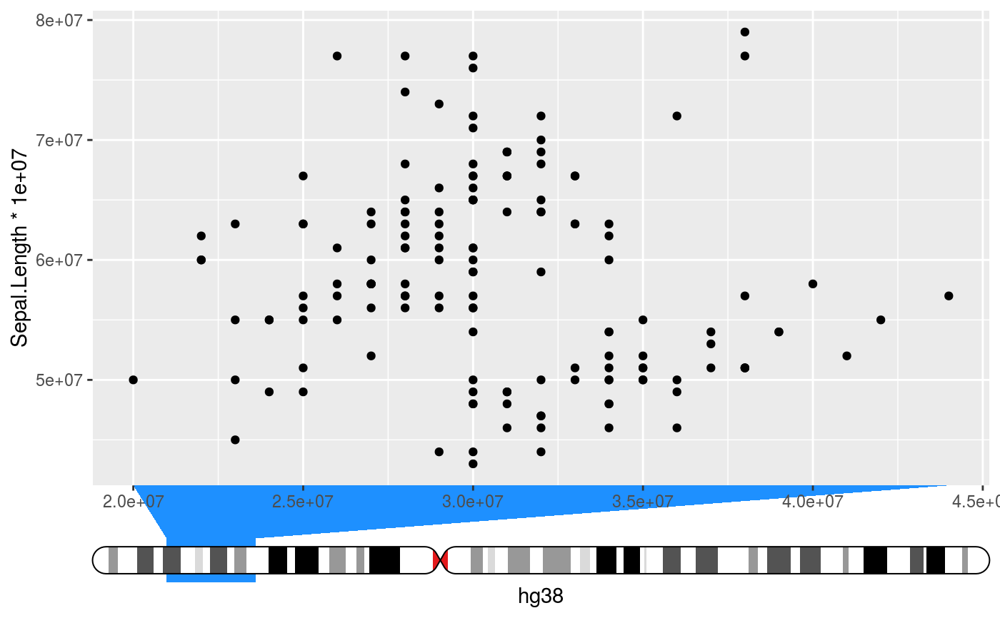

Places an ideogram next to the axis and indicates the data range interpreted
as genomic positions on the ideogram. The ideograms need to be setup first
with the setup_ideogram() function.
guide_ideogram_axis( title = waiver(), check.overlap = FALSE, angle = NULL, n.dodge = 1, order = 0, position = waiver(), chromosome = NULL, genome = NULL, ideo_size = unit(0.5, "cm"), funnel_size = unit(0.5, "cm"), funnel_col = "dodgerblue", regular_axis = TRUE )
| title | A character string or expression indicating a title of guide.
If |
|---|---|
| check.overlap | silently remove overlapping labels, (recursively) prioritizing the first, last, and middle labels. |
| angle | Compared to setting the angle in |
| n.dodge | The number of rows (for vertical axes) or columns (for horizontal axes) that should be used to render the labels. This is useful for displaying labels that would otherwise overlap. |
| order | Used to determine the order of the guides (left-to-right, top-to-bottom), if more than one guide must be drawn at the same location. |
| position | Where this guide should be drawn: one of top, bottom, left, or right. |
| chromosome | A |
| genome | A |
| ideo_size | A |
| funnel_size | A |
| funnel_col | A |
| regular_axis | A |
A list with the S3 class guide.
Currently does not support S4Vector or genomic scales (yet).
guide_train: Trainer for ideogram axis. See
guide-exts.
guide_transform: Transformer for ideogram axis. See
guide-exts.
guide_gengrob: Graphic object generator for ideogram axis.
See guide-exts.
The setup_ideograms() function for importing
and caching ideogram data.
Other position guides:
guide_genomic_axis()
# Setup ideograms and make a basic plot setup_ideograms(genome = "hg38") p <- ggplot(iris, aes(Sepal.Width * 1e7, Sepal.Length * 1e7)) + geom_point() # As main axis p + guides(x = guide_ideogram_axis("hg38", chromosome = "chr2"))# As secundary axis p + guides(x.sec = guide_ideogram_axis("hg38", chromosome = "chr2", regular_axis = FALSE))# Without funnel p + guides(x = guide_ideogram_axis("hg38", chromosome = "chr2", funnel_size = 0))# Without funnel or indicator p + guides(x = guide_ideogram_axis("hg38", chromosome = "chr2", funnel_size = 0, funnel_col = NA))